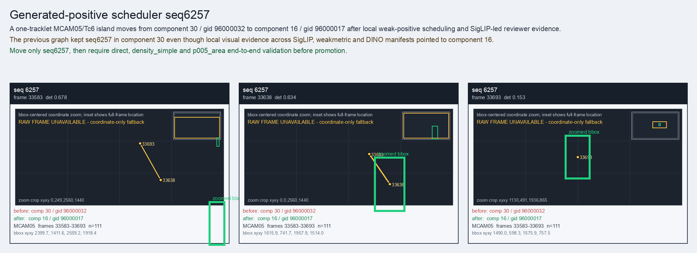

Generated-positive scheduler seq6257
A one-tracklet MCAM05/Tc6 island moves from component 30 / gid 96000032 to component 16 / gid 96000017 after local weak-positive scheduling and SigLIP-led reviewer evidence.
Before
component 30, gid 96000032, component_size 109
component 30, gid 96000032, component_size 109
After
component 16, gid 96000017, component_size 141, decision_status generated_positive_scheduler_probe
component 16, gid 96000017, component_size 141, decision_status generated_positive_scheduler_probe
Evidence
target_sim=0.6407, target_margin=0.0545, source_rest_margin=0.6139
Raw frame
unavailable_coordinate_fallback
target_sim=0.6407, target_margin=0.0545, source_rest_margin=0.6139
Raw frame
unavailable_coordinate_fallback
Failure and fix
Old failure: The previous graph kept seq6257 in component 30 even though local visual evidence across SigLIP, weakmetric and DINO manifests pointed to component 16.
New implementation: Move only seq6257, then require direct, density_simple and p005_area end-to-end validation before promotion.
BBox evidence

Moved tracklets
| seq | video | gid | component | frames | dets |
|---|---|---|---|---|---|
| 6257 | vlincs_MS01_MC0001_MCAM05_2024-03-Tc6 | 96000032 -> 96000017 | 30 -> 16 | 33583-33693 | 111 |